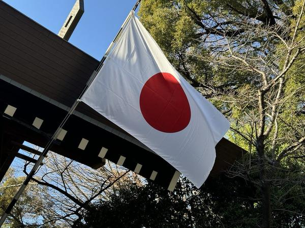
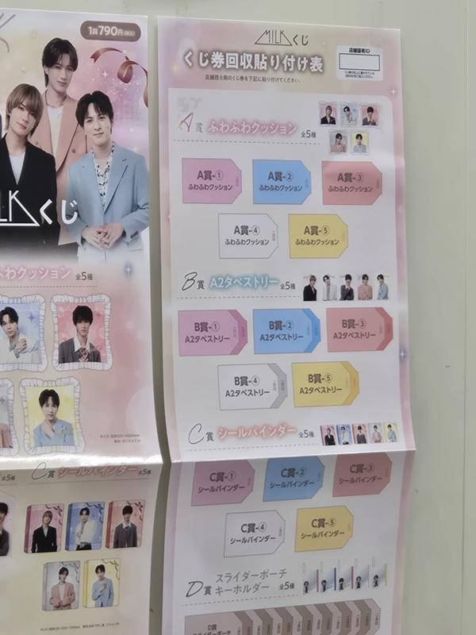
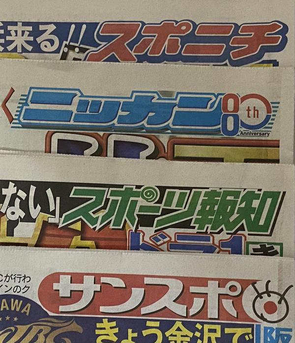
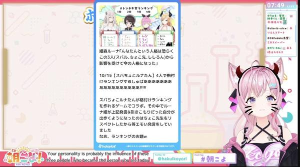
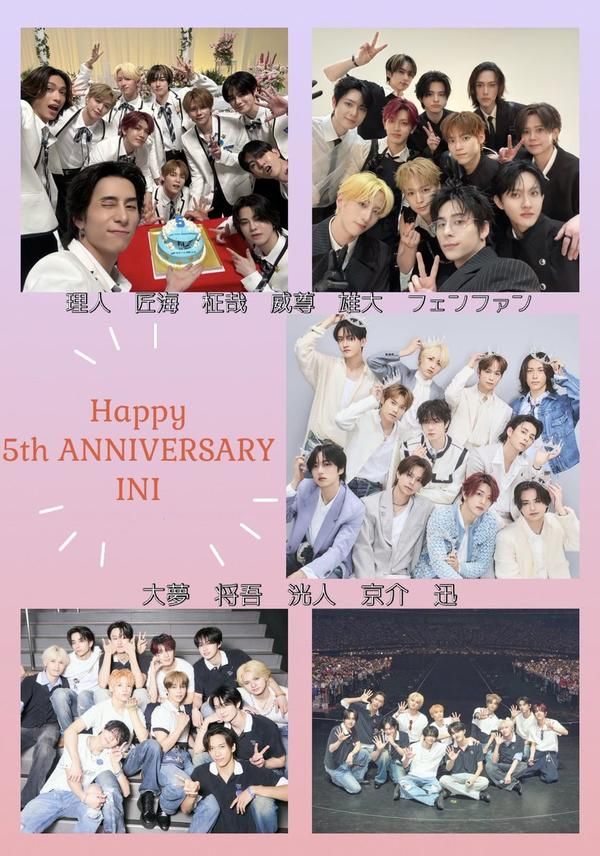
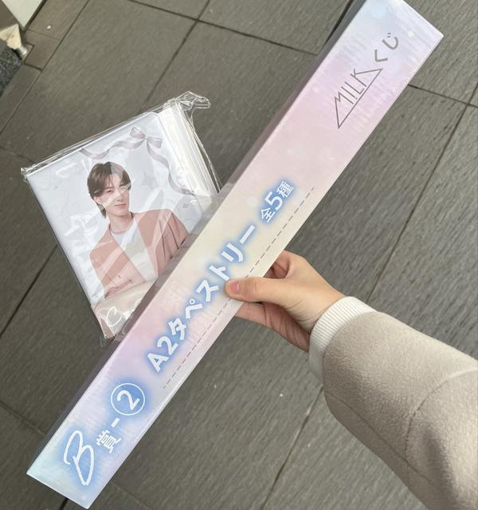

🇯🇵 日本の主要ニュース
🌍 世界の主要ニュース
米中間選挙、日本時間3日夜に投票開始トランプ政権への事実上の審判となる中間選挙の投票が日本時間3日夜に始まります。トランプ大統領はワシントンで演説し、成果を強調して共和党候補への投票を呼びかけました。
出典：NHK
🤖 AIニュース
💻 PC・ガジェットニュース
🔥 Xのトレンド（日本）
ジャンルで絞らず上位20件を掲載。「未確認」はX上の投稿だけを根拠にしたもので、報道機関による裏付けはありません。

11月3日は日本国憲法の公布を記念した国民の祝日「文化の日」。趣旨の「自由と平和を愛し、文化をすすめる」にちなむ俳句やイラスト、祝日の過ごし方の投稿が並んでいます。
⚠ 未確認（X情報のみ）
「2026FNS歌謡祭」が2週連続で生放送されることと、第1弾出演者36組（Snow Man、M!LK、HANAなど）が発表され、ファンの喜びの投稿が相次いでいます。司会は相葉雅紀さんと井上清華アナです。
出典：モデルプレス（Yahoo!ニュース）
ローソン公式アカウント「あきこ」がM!LKとのキャンペーン記念として、「ローソン爆裂イイじゃん」とコメントして引用ポストするとQUOカードが当たる企画を始め、参加投稿が大量に出ています。
出典：ローソン公式X（@akiko_lawson）

ローソンでM!LKのくじが始まり、「早朝から並んだ」「近所の店はもう完売」といった報告や、メンバー別景品の交換募集が相次いでいます。
⚠ 未確認（X情報のみ）
1999年11月3日にデビューした嵐が27周年。活動終了後も「11月3日は嵐の記念日」と祝う投稿が多数寄せられ、5人そろったコメントに喜ぶ声も出ています。
⚠ 未確認（X情報のみ）
映画製作会社が、10月23日の舞台あいさつでの言動をめぐり泉ピン子さんを東京地裁に提訴したと発表。「持ち味の毒舌」か「パワハラ」かで意見が割れています。
出典：アゴラ（Google ニュース経由）

BE:FIRSTがCDデビュー5周年を迎え、同じ日にニューアルバム『BE:4U』を発売。20時からのYouTube生配信も告知され、お祝いの投稿や新聞掲載の報告が広がっています。
出典：BARKS（Google ニュース経由）
11月3日は語呂合わせで「みかんの日」（12月3日もみかんの日）。みかんのイラストや写真がたくさん投稿されています。
⚠ 未確認（X情報のみ）
Hey! Say! JUMPがFNS歌謡祭に出演し「スペシャルメドレー」を披露すると発表され、ファンから「嬉しい」「楽しみ」の声が相次いでいます。
⚠ 未確認（X情報のみ）
文化の日の趣旨「自由と平和を愛し、文化をすすめる」が話題に。「今日初めて知った」という投稿や、憲法公布80年に触れる投稿が出ています。
⚠ 未確認（X情報のみ）
1954年11月3日に第1作が公開されたことにちなむ「ゴジラの日」。今年は山崎貴監督の新作『ゴジラ-0.0』が3日に公開され、キングギドラの参戦も話題です。
出典：デイリースポーツ（Yahoo!ニュース）
祝日の今日も仕事という人たちが「祝日出勤だからお弁当を豪華に」「明日休みだから頑張る」と嘆いたり励まし合ったりしています。
⚠ 未確認（X情報のみ）

ホロライブの博衣こよりさんの朝配信の実況タグ。共演したメンバーとのエピソードや「エモい名言」に反応する投稿が流れています。
⚠ 未確認（X情報のみ）
なにわ男子の公式YouTubeで、高橋恭平さんと大橋和也さんの「橋橋デート」企画の新作動画が公開され、ファンが盛り上がっています。
⚠ 未確認（X情報のみ）
祝日で電車が休日ダイヤで動いていることに、出勤する人たちから「今日休日ダイヤかよ」「アラームも休日ダイヤで鳴れ」とぼやく声が出ています。
⚠ 未確認（X情報のみ）
M!LKのローソンくじで、A〜C賞はメンバーごとに番号が振られていて選べない、1会計3回までなどの情報や、交換の募集が多く投稿されています。
⚠ 未確認（X情報のみ）

INIがデビュー5周年。「#祝デビュー5周年_11の願い叶えよう」とあわせて、ファンがお祝いのメッセージやイラストを投稿しています。
⚠ 未確認（X情報のみ）
「橋橋デート」と同じなにわ男子の動画の話題で、タイトルの「恭平プレゼンツプランを満喫」から。高橋恭平さんが考えたデートプランに期待する声が出ています。
⚠ 未確認（X情報のみ）
11月3日は手塚治虫さんの誕生日（1928年）にちなむ「まんがの日」。漫画家が自作を紹介したり、好きな漫画を挙げたりする投稿が並んでいます。
⚠ 未確認（X情報のみ）

M!LKのローソンくじのC賞「シールバインダー」について、推しのメンバーが出なかった人たちの交換募集が相次いでいます。
⚠ 未確認（X情報のみ）
Grok Bot がまとめました。